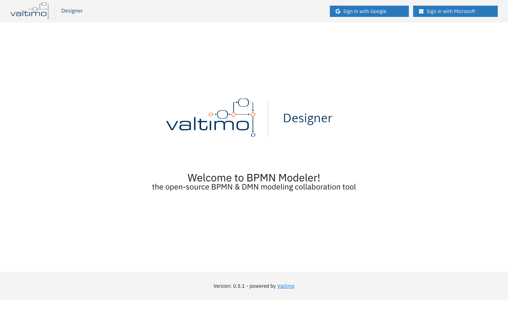
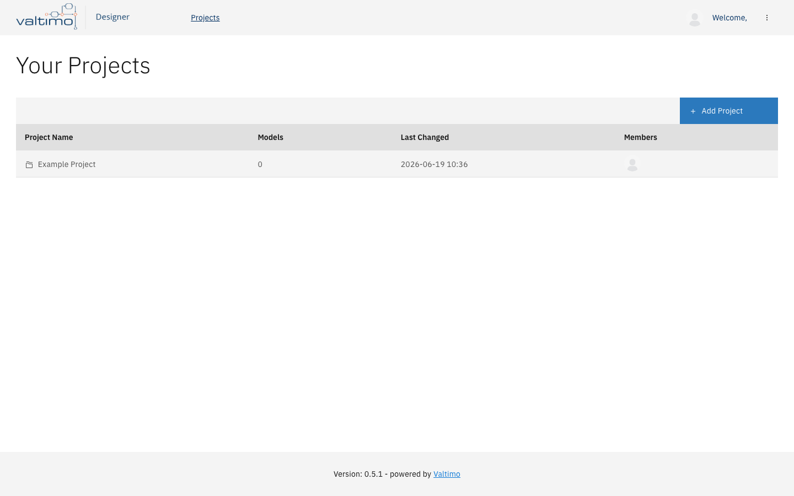
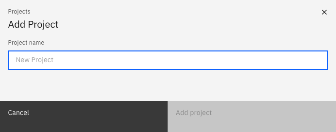
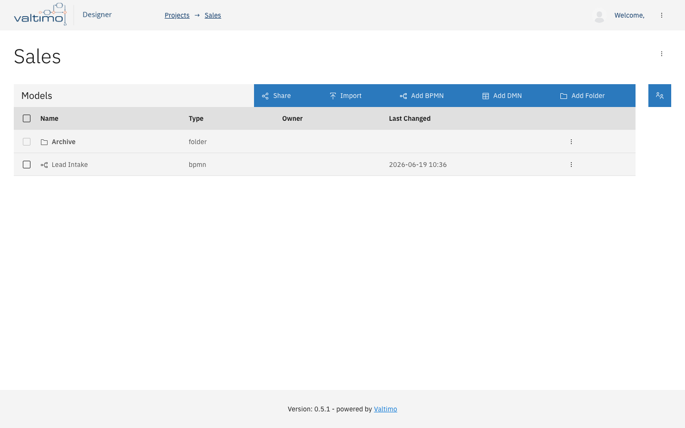
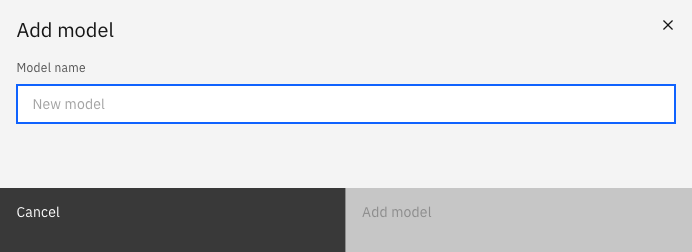
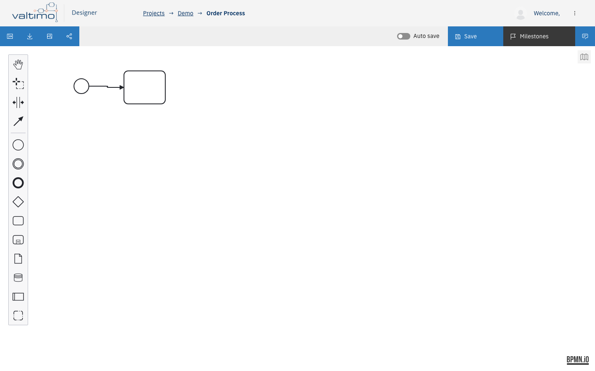
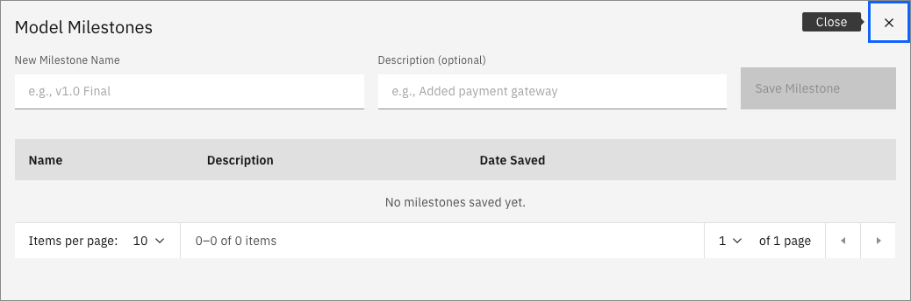
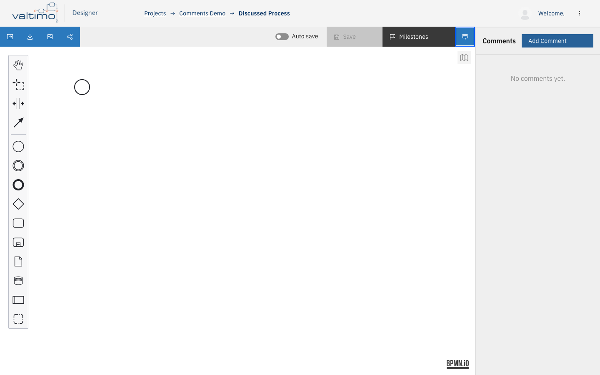
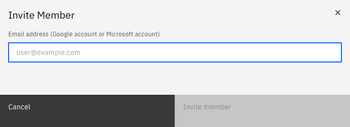

User Guide
BPMN Modeler
BPMN Modeler is an open-source, browser-based tool for creating and collaborating on BPMN 2.0 (process diagrams) and DMN 1.3 (decision tables). It requires a Google or Microsoft account to sign in, stores all data in Firebase Realtime Database, and runs entirely in the browser — no installation required.
1. Getting started

Sign in
The sign-in buttons shown in the header are controlled by two feature flags in src/config/config.js:
| Button | Flag | Default |
|---|---|---|
| Sign in with Google | enableGoogleSignIn | true |
| Sign in with Microsoft | enableMicrosoftSignIn | true |
Both open a browser pop-up. On first sign-in a new user record is created in the database with your email, display name, and profile avatar. On subsequent sign-ins the record is updated with the latest profile data and a lastLogin timestamp.
Google avatar — taken directly from the Google profile photo.
Microsoft avatar — fetched from the Microsoft Graph API (/me/photo/$value) using the OAuth access token. The image is stored as a base64 data URL.
Cross-provider account linking — if you attempt to sign in with a provider (e.g. Google) and the email address already belongs to an account created with the other provider (Microsoft), the application automatically links the two credentials to one account. You can then sign in with either provider.
Sign out
Click your avatar in the top-right corner and choose Logout. If you have unsaved diagram changes, a dialog asks whether to save them first before signing out.
Welcome screen
When not signed in, the application shows a welcome screen with the app name and tagline. All project and editor views are gated behind authentication.
2. Projects
Viewing your projects
Once signed in, the home screen shows two tables:
| Table | Contents |
|---|---|
| Your Projects | Projects where you are the owner. |
| Shared with me | Projects where another user is the owner but you are a member. |
Each row shows the project name, number of models, last changed date, and member avatars (up to 4 avatars; overflow shown as +N). Columns are sortable — click any column header to sort ascending; click again for descending.

Creating a project
Click Add Project. Enter a name (must be non-empty) and confirm. The project is immediately created with you as the sole owner member.

Opening a project
Click any project row to navigate to the project view (/project/{name}).
Renaming a project
Open the project, then click the overflow menu (⋮) in the project heading and choose Rename Project. Only the project owner sees this option.
Deleting a project
Overflow menu → Delete Project (owner only). Confirmation required. Deletes the project record, all its BPMN/DMN models, all XML data, all milestones, and all invitations.
Leaving a project
Overflow menu → Leave Project (non-owners only). Confirmation required. Removes you from the member list and from your personal project index.
Pending invitations
If you have pending invitations, a banner appears above the project list. Each invitation shows the project name and sender. You can Accept (adds you as an editor) or Decline (marks the invitation declined; it is not deleted from the database).
3. Folders
Folders exist inside a project and are used to organise models. They are embedded inside the project record in the database (not a separate top-level collection). A folder can be created only at the project root — you cannot nest folders inside other folders.
Creating a folder
In the project view, click Add Folder in the toolbar (only visible when you are at the project root, not inside a folder). Enter a name.
Opening a folder
Click the folder row in the models table. The URL changes to /project/{name}/folder/{folderName} and the table shows only the models inside that folder. A .. entry at the top of the list navigates back to the project root.
Renaming a folder
Overflow menu on the folder row → Rename (available to folder owner or project owner).
Deleting a folder
Overflow menu → Delete Folder. This option is disabled (greyed out, not hidden) when the folder still contains models. The folder must be empty before it can be deleted.
4. Models

Model types
| Type | File format | Notes |
|---|---|---|
| BPMN | .bpmn | Fully supported. |
| DMN | .dmn | Can be created, uploaded, and stored; editor has limited support — opening a DMN model from the project side panel is marked not-allowed. |
Creating a model
Click Add BPMN or Add DMN in the toolbar. Enter a name — it must match /^[a-zA-Z_][\w-.\s]*$/ (start with a letter or underscore; only letters, digits, _, -, ., and spaces allowed). A camelCase version of the name is used as the XML process/decision id.

Importing a model from file
Click Import to open the file picker. You may select multiple .bpmn and/or .dmn files at once. The model name is extracted from the XML (bpmn:process name or decision name attribute); if that attribute is absent the filename (minus extension) is used.
Opening a model for editing
Click any model row. The URL changes to /project/{name}/model/{id}. If you have unsaved changes in the currently open model, a warning toast is shown and navigation is blocked until you save or discard.
Renaming a model
Overflow menu → Rename (model owner or project owner). Same name validation as creation. On rename, the XML id and name attributes of the root process/decision element are updated to match.
Duplicating a model
Overflow menu → Duplicate. Creates a copy with " Copy" appended to the name, in the same folder as the original. The full XML is copied.
Moving a model to a folder
Overflow menu → Move to... (model/project owner). A dialog shows all folders in the project plus a "Project root (No Folder)" option.
Downloading a model
Overflow menu → Download. Downloads the current XML as a .bpmn or .dmn file. The filename is derived from the process/decision name converted to kebab-case.
Deleting a model
Overflow menu → Delete Model (model owner or project owner). Confirmation required. Deletes the model metadata, XML data, and all milestones.
Bulk actions
Select models using the checkboxes (only BPMN and DMN rows are selectable; folders cannot be selected). A batch actions bar appears:
| Action | Who can use it |
|---|---|
| Download | Any member |
| Duplicate | Any member |
| Delete | Project owner only |
| Move to... | Project owner only |
5. The editor

BPMN editor
Powered by bpmn-js. Features: drag-and-drop BPMN 2.0 elements, colour picker, minimap, zoom/pan, and standard keyboard shortcuts (undo, redo, copy/paste, delete).
DMN editor
Powered by dmn-js. Supports two views: DRD view (Decision Requirements Diagram) and Decision Table view. Switching views triggers an XML export so changes are not lost.
Saving
The Save button appears in the toolbar when there are unsaved changes. Auto-save (BPMN only) — toggle the Auto-save switch in the toolbar. When on, every diagram change is saved automatically. The auto-save preference is persisted to localStorage.
Downloading from the editor
| Button | What it downloads |
|---|---|
| Download BPMN icon | .bpmn XML file (BPMN only) |
| Download as image icon | .png at 1.5× resolution, rendered via SVG export (BPMN only) |
Unsaved-changes guard
Any navigation action (breadcrumb, sidebar item) while there are unsaved changes opens a Save or Discard dialog. Navigation is blocked until the user chooses.
Resizable panels
| Panel | localStorage key | Default | Min/max |
|---|---|---|---|
| Project sidebar (left) | sidePanelWidth | 250 px | 150 – 800 px |
| Comments panel (right) | commentsPanelWidth | 300 px | 200 – 800 px |
6. Project sidebar (in editor)
The left sidebar shows the contents of the current project while you are in the editor. Toggle it with the panel icon in the toolbar.
Contents (in order): .. (navigate up, only when inside a folder), then folders at the current level (bold, alphabetical), then models at the current level (alphabetical, filtered to the current folder).
Click a sidebar item to navigate. If you have unsaved changes, a warning toast blocks navigation and you must save first. DMN model items show a not-allowed cursor and do not navigate. The sidebar's open/closed state is persisted to localStorage (isProjectViewerOpen).
7. Milestones (version history)
Each model has its own milestone list — named snapshots of the XML at a point in time. Open the list with the Milestones button in the editor toolbar. Milestones are displayed in a paginated table (10 per page), sorted newest-first.

Saving a milestone
Enter a name and optional description, then click Save Milestone. The current XML is stored with a createdAt timestamp and your user ID.
Loading a milestone
Click Load on any milestone row. A confirmation sub-view appears with a toggle (default: on) labelled "Save current state as milestone before loading". If left on, the current model XML is automatically saved as a new milestone named State before loading '{milestone name}' before the selected version is loaded.
Deleting a milestone
Click Delete on a milestone row. Confirmation required. Deletion is permanent.
8. Comments
The comments panel is accessible via the chat icon in the editor toolbar. It can be opened and closed independently of the project sidebar.

Adding a comment
Click Add Comment in the panel header. A modal opens with a text area. Comments are stored with your display name, user ID, and a timestamp.
Viewing comments
Comments are listed newest-first with the author name and a formatted timestamp (YYYY-MM-DD HH:MM).
Deleting a comment
The trash icon appears only on your own comments. Click it to delete — no confirmation dialog, deletion is immediate.
9. Team collaboration
Inviting a member
In the project view, open the Members panel (group icon) and click Invite. Enter the invitee's email address (Google or Microsoft account). Before sending, two checks run against the database:

- Is there already a
Pendinginvitation for this email + project? → blocked with a warning. - Is this email already a member of the project? → blocked with a warning.
The email is normalised to lower-case before storage.
Member roles
| Role | How assigned | Permissions |
|---|---|---|
owner | Automatically on project creation | Can rename/delete the project, remove members, and perform all model operations |
editor | Assigned when an invitation is accepted | Can create, rename, duplicate, download, and delete their own models |
Removing a member
In the Members panel, open the overflow menu on a member row → Remove member (project owner only, for other members). Confirmation required.
How it fits together
flowchart TD
A["Not signed in\nWelcome screen"] --> B["Sign in\n(Google or Microsoft)"]
B --> C["ALL_PROJECTS\nYour Projects + Shared with me"]
C --> D["PROJECT view\nModels • Folders • Members"]
D --> E["BPMN editor\nbpmn-js canvas"]
D --> F["DMN editor\ndmn-js canvas"]
E --> G["Milestones modal"]
E --> H["Comments panel"]
E --> I["Share modal"]
D --> J["Invite modal"]
C --> K["Pending invitations banner\nAccept / Decline"]
E --> L["Save / discard guard\n(on navigation)"]
F --> L
Related code
App shell & routing
src/App.tsx
Project, folder & model management
src/components/ProjectList.tsxsrc/services/projects.service.tsxsrc/services/models.service.tsx
Authentication & user record
src/services/user.service.tsx
Editor wrappers
src/components/BpmnModeler.tsxsrc/components/DmnModeler.tsx
Modals
src/components/AddProjectModal.tsxsrc/components/RenameProjectModal.tsxsrc/components/AddBPMNModelModal.tsxsrc/components/RenameModelModal.tsxsrc/components/AddFolderModal.tsxsrc/components/RenameFolderModal.tsxsrc/components/MoveModelModal.tsxsrc/components/InviteModal.tsxsrc/components/MilestonesModal.tsxsrc/components/AddCommentModal.tsxsrc/components/ConfirmationModal.tsxsrc/components/SaveModal.tsxsrc/components/LogoutModal.tsxsrc/components/ShareModal.tsx
Utilities
src/services/utils.service.tsx
Configuration
src/config/config.js
Screenshots
- The images in
docs/assets/screenshots/are generated by thecapture-screenshotsskill frome2e/screenshots/manifest.ts(npm run screenshots). Regenerate them when the UI changes rather than editing the PNGs by hand.